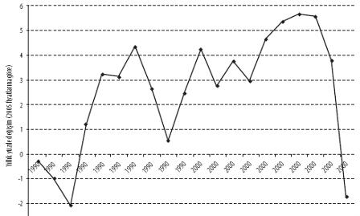

GÖKKUŞAĞI ULUSUNA MERHABA[7]
Brezilya ile inatçı bir rekabet içerisinde bulunsa da, Güney Afrika bugün "resmî olarak" dünyanın en eşitsiz toplumu.[8] Devletin 2009 yılı Kalkınma Göstergeleri'ne bakılacak olursa, Güney Afrikalıların en yoksul yüzde 20'lik dilimi toplam gelir içerisinden sadece yüzde 1,6'lık pay alırken, en zengin yüzde 20'lik kesimin payı yüzde 70'i buluyor.[9] Birleşmiş Milletlerin "refah"a dair son İnsani Gelişmişlik Endeksi'nde, Güney Afrika bir sıra daha gerileyerek 182 ülke arasında 129'uncu oldu.[10] Küresel ekonomik kriz öncesinde, işsizlik oranı bakımından zirvedeki ülkeler arasındaydı ve şimdi de resmî oran yüzde 35,4'e, diğer bir deyişle çalışabilir nüfusun üçte biri oranına erişmiş durumda.[11] Sermayenin, yararlanmak üzere bir yedek işgücü ordusu yarattığı yönündeki Marksist düşünce, bugünün Güney Afrika'sında geçerliliğini bütünüyle sürdürüyor. Marx, bu ordudaki askerlerin dünyadaki en yüksek HIV oranlarıyla pençeleştiğini de öngörebileceği bir çağda yaşamadı.[12] Bu tablo, orta gelirli ülkeler sınıfında yer aldığı halde, Güney Afrika'da ortalama ömrün BM verilerine göre neden sadece 51,5 yılda kaldığını açıklamaya yardımcı oluyor.[13]
Peki, Güney Afrika'da apartheid rejiminin yıkılışından sonraki dönemi için yapılacak kapsamlı bir ekonomi politik çözümleme içerisine tüm bunlar ve daha başka gelişmeler nasıl oturtulmalı? Bizler, neoliberalizm ve finansallaşmanın bölgede büründüğü özgün biçimi, ayrıca dünya ekonomisinde ve kapitalist kalkınma sürecinde meydana gelen geniş ölçekli değişimler ile apartheid mirası arasındaki etkileşimi irdelemek gerektiği kanısındayız. Küresel birikim ile bu birikimde gözlenen kaymalar ve yeniden yapılanmalar, sınıf iktidarının şu veya bu ülkedeki belli ekonomik yapı ve biçimlerinin aracılığından faydalanmak zorunda. Güney Afrika'daki birikim sistemi için, "Maden-Enerji Bileşimi" (MEB) tanımlamasını uygun buluyoruz. Bu bileşimde, birikim süreçlerinin öteden beri bir avuç sektöre bağımlı kalması ve bu sektörlerin egemenliğinde bulunması söz konusu. Devletin yoğun teşviklerinden faydalanan ve madencilik ile enerji endüstrileri etrafında kümelenen bu sektörleri ham ve yarı-işlenmiş madencilik ürünleri, altın, elmas, platin, çelik, kömür, demir ve alüminyum şeklinde sıralayabiliriz.[14]
Güney Afrika'daki üretim faaliyetleri bakımından değerlendirildiğinde, finansallaşmanın, kısa vadeli yabancı sermaye girişleriyle, muazzam bir uzun vadeli sermaye çıkışı arasında, ülkeye has bir bileşim oluşturduğu görülmekte. Sermaye girişlerine, büyük bölümü lüks tüketimden kaynaklanmak üzere, tüketici borçlarındaki artışlar eşlik ederken, sermaye çıkışları ise ülke içinde sadece kârlı MEB sektörlerine yoğunlaşan büyük "yerli" şirketlerin yurtdışına yönelmesi ve faaliyetlerini uluslararası düzleme taşıması ile gerçekleşiyor. Sonuçta, son krizin dalgaları ulaşmadan önce bile, istihdam yaratmayan bir büyüme yaşanmakta, yeni siyah seçkinlerin de içinde bulunduğu küçük bir azınlık için yaşam standartları yükselirken, halkın büyük bölümü kalıcı kitlesel yoksullukla boğuşmaktaydı. Şekil 1, Güney Afrika'nın yıllık GSYH büyüme çizgisini gösteriyor.
Şekil 1: Güney Afrika'da yıllık GSYH büyüme hızı, 1990-2009
